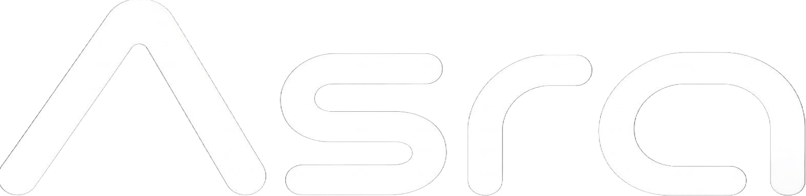

ASRO
何が一番？TECHNOLOGY / PRODUCT / INFRASTRUCTURE
01
WHY ASRO EXISTS
日本のために、
できることをやる。
Technology should be something
we can build, not only use.
ASROは、技術をただ受け取るだけで終わりたくない。AIも、ソフトウェアも、それを支えるインフラも、自分たちで考えて、自分たちでつくる。
最初から大きな組織だったわけじゃない。完成された答えがあったわけでもない。それでも、必要だと思ったものを一つずつ形にしていく。
日本から、新しい選択肢を増やす。
それがASROの出発点であり、これからも変わらない軸。
AIINTELLIGENCE
WEBPRODUCT
INFRAFOUNDATION
ASROは、完成を待たない。
思いついた未来を、
自分たちの手で現実にする。
考える。つくる。失敗する。直す。もっと良くする。その繰り返しの先に、まだない「当たり前」をつくっていく。
02 / DIVISIONS考える。つくる。
考える。つくる。
支える。
ASROは3つの領域をつなげて、
アイデアを実際に動くものへ変えていく。


03 / ASRO AIMeet
Meet
Asra.
ASRO AIがつくっていく、
日本語を中心としたLLM。

IN DEVELOPMENT
日本語を中心に、
LLMをつくる。
Asraは、ASRO AIが開発していく日本語中心のLLM。日本語で自然に使えるAIを目指し、これから開発を進めていく。
View Asra ↗04
HOW WE BUILD
01
Think.
当たり前を、そのまま受け入れない。
02
Build.
考えたら、実際に動くものにする。
03
Improve.
完成で止まらず、何度でも良くする。
04
Connect.
技術を、人の役に立つ場所へつなぐ。
ONE SIMPLE QUESTION
何が一番？
答えはひとつじゃない。
だから、考え続ける。
05 / NEWSWhat's
View all news ↗What's
next.
BUILD TOMORROW